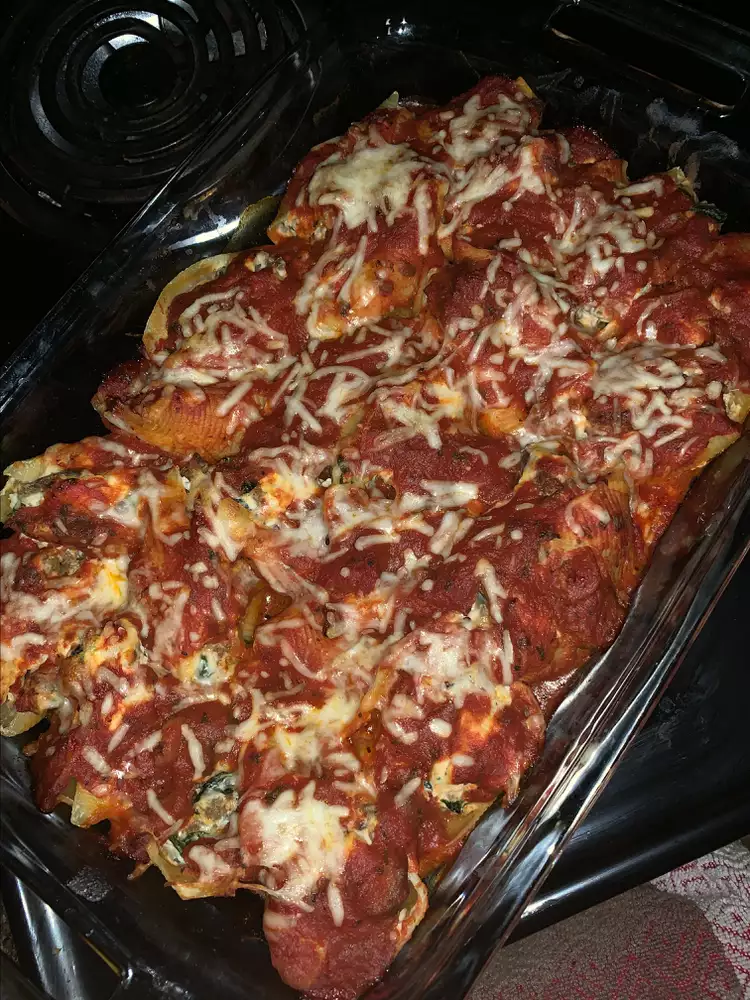

Giant Stuffed Pasta Shells

Description
Yummy and easy, these large pasta shells are stuffed with garlic, thyme, mushrooms, spinach, and ricotta. Perfect for a weeknight dinner!
Ingedients
- 24 lumaconi pasta shells
- 3 tablespoons olive oil
- 1 (8 ounce) package button mushrooms, chopped
- 3 cloves garlic
- 1 (10 ounce) bag baby spinach
- 2 teaspoons ground thyme
- salt and ground black pepper, to taste
- 2 cups ricotta cheese
- ¾ cup shredded mozzarella cheese
- ½ cup grated Parmesan cheese
- 1 (28 ounce) jar pasta sauce
- ¼ cup shredded mozzarella cheese
- ¼ cup grated Parmesan cheese
Steps
- Bring a large pot of lightly salted water to a boil. Cook pasta shells in boiling water, occasionally stirring, until cooked through but firm to the bite, about 8 minutes. Drain.
- Heat olive oil in a large skillet over medium-high heat. Cook and stir mushrooms and garlic in hot oil until mushrooms are soft, about 7 minutes. Stir spinach and thyme into mushroom mixture; season with salt and pepper. Cook and stir mixture until spinach wilts. Remove the skillet from heat and drain any excess liquid. Transfer drained mixture to a large bowl.
- Preheat the oven to 375 degrees F (190 degrees C).
- Mix ricotta cheese, 3/4 cup mozzarella cheese, and 1/2 cup Parmesan cheese with spinach mixture. Season again with salt and pepper and stuff into pasta shells.
- Arrange stuffed shells into a 9x11-inch baking dish. Pour pasta sauce over shells. Top with 1/4 cup mozzarella cheese and 1/4 cup Parmesan cheese.
- Bake in the preheated oven until the cheese is melted and shells are hot, about 30 minutes.
Home